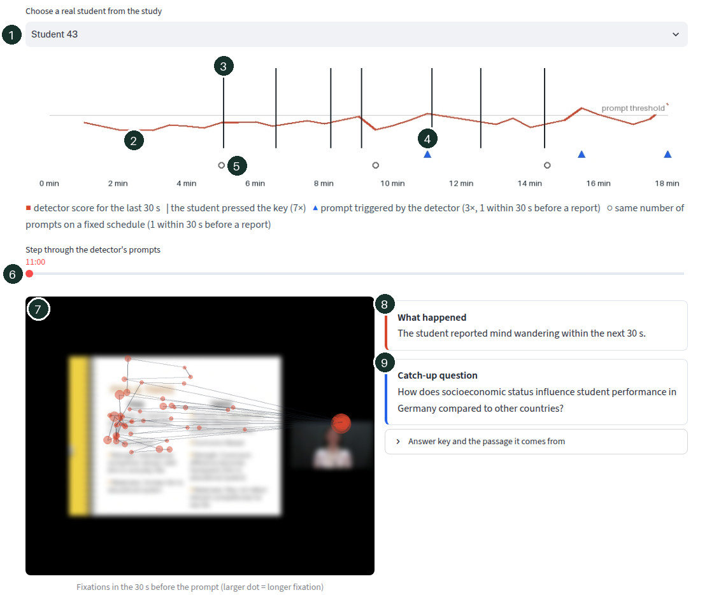

The question
Mind wandering takes up a large share of the time people spend on any task (Smallwood and Schooler, 2015), and a video lecture leaves nobody to notice it: the video keeps playing while the student is elsewhere. An adaptive learning system could pause and ask a short catch-up question, but only if it knows when. Eye movements are a natural signal, because looking and thinking are tightly coupled while following slides, and webcams can now estimate gaze without special hardware.
So the question has three parts. Can mind wandering be detected from gaze alone, for a student the system has never seen? How early? And if a tutor acts on the detector, does it step in at better moments than a tutor that simply asks at fixed times?
The nine hypotheses, features, models and tests were written down and committed before any model was fitted. Three deviations and two exploratory checks are logged in the same file.
How it works, in plain words
No statistics needed for this part. Here is what the project does, step by step.
- Watch where the eyes go. While a student watches the lecture, an eye tracker below the screen notes 60 times a second where on the screen they are looking. What matters are the short stops of the eyes, called fixations: that is when we take in what we see. In this study the eyes made about two such stops every second, on the slides, on the lecturer's face, or somewhere else.
- Ask when the mind wandered. Nobody can see a wandering mind from the outside, so the study asked the students themselves. Some pressed a key whenever they caught themselves thinking about something else; others were asked at four beeps during the lecture.
- Cut the lecture into 30-second pieces. Each piece is described with twelve simple numbers: how often the eyes stopped, how long each stop lasted, how much time went to the slides and how much to the lecturer, how far the eyes jumped, whether they moved left to right as in reading, and so on.
- Let a computer look for a pattern. A model learns from many students which pieces came just before someone said "my mind wandered". It is then tested only on students it has never seen, the way a rule a teacher learned in one class has to work in the next class too.
- Score it fairly. The score is AUC. Take one moment just before a student drifted and one ordinary moment, and ask the detector which one looks more like drifting. AUC is how often it picks the right one: 0.5 means it is guessing, like a coin toss; 1.0 means it is always right. Here it came out at 0.49.
- Let a pretend tutor act on it. Whenever the detector's score is high, the tutor would pause the video and ask a short question about what the lecturer just said. To see whether that timing is any good, the same number of questions is also placed on a fixed schedule and at random times, and for each we count how often the question came in the 30 seconds before the student said their mind had wandered.
- A result is "not supported"
- The prediction I wrote down in advance did not come true. That is still a result: it tells the next person what does not work.
- p = .026
- How likely a difference this large would be if there were really no difference. Below .05 is usually treated as "probably real".
- [0.42, 0.59]
- The range the true value probably lies in. When the range includes 0.50, the detector may well be guessing.
- Planned in advance
- All predictions and tests were written down and saved before any analysis, so the results could not be bent to fit them afterwards.
Data and methods
Video lectures: Wandering Eyes (Zhang, Miller, Sun and Cortina, 2020; OSF, CC-BY 4.0). 143 undergraduates watched a 19-minute Education or 22-minute Genetics lecture, slides plus instructor, while an Eye Tribe tracker recorded their gaze at 60 Hz. Half were asked four times, at a beep, whether their mind had wandered (272 answers, 87 yes). The other half pressed a key whenever they noticed it (815 presses). Everyone took a short test before and a longer one after.
Reading: ReMind (Sun, 2025; OSF, CC-BY 4.0). 45 readers marked where in a text their mind had started to wander; the authors provide gaze features for the 2 seconds before each onset and before matched control points.
- Windows and labels
- For each report I take the 30 seconds of gaze before it. For key presses, the comparison windows are every other 30 seconds of the lecture that stay clear of a press. These are "not reported" rather than certainly attentive, which is a known weakness of self-reports.
- Twelve gaze features
- Fixation rate; mean, median and spread of fixation durations; share of long fixations; share of looking at the instructor rather than the slides (screen regions from the authors' own analysis); share off the video; how scattered fixations are on the slides; size and variability of eye jumps; share of mostly horizontal jumps, which signals reading; and how much of the window the tracker captured.
- Models
- Logistic regression (primary) and a random forest on the features; a small recurrent network (GRU) that reads the raw sequence of fixations in each window.
- Testing on students the model never saw
- Leave-one-student-out, or ten folds split by student. Significance by 1,000 label shuffles; confidence intervals by resampling students.
- The tutor simulation
- Walk through each lecture in 30-second steps. The triggered tutor prompts when the detector score is in the top 20% and at least a minute has passed since its last prompt. The fixed tutor sends the same number of prompts, evenly spaced; a random tutor sends them at random times. A prompt counts as well timed if the student reports drifting within the next 30 seconds.
- Catch-up questions
- For each of the 22 paragraphs of the Education lecture script, gpt-4o-mini wrote one short question and an answer key using only that paragraph. A moment in the video is matched to a paragraph by word count, which is approximate. The demo shows these stored questions and makes no model calls.
What came out
The detector does not work. With summary features of 30 seconds of gaze, the moments before a student reported mind wandering could not be told apart from other moments: AUC 0.49 for key presses and 0.50 for probes, where 0.50 is chance.
The tutor beat a fixed schedule, but not chance. Triggered prompts were better timed than evenly spaced ones, as predicted, but no better than prompts at random times. The fixed schedule was simply unlucky.
The order of fixations may carry what the summaries lose. The sequence model reached AUC 0.57, the one video result clearly above chance. It needs confirming on new data.
In reading, the signal is there but small. Gaze in the 2 seconds before a reader's mind began to wander was distinguishable from control moments (AUC 0.55, p = .001). Fixation count pointed in opposite directions in reading and in the lecture, so the features do not carry over directly.
How well each model told mind wandering apart from other moments
| Hypothesis and result | Verdict | |
|---|---|---|
| H1 | Gaze detects mind wandering at a probe. AUC 0.50 [0.42, 0.59], p = .38; forest 0.58. | Not supported |
| H2 | Gaze detects the 30 s before a key press. AUC 0.49 [0.42, 0.56], p = .57; forest 0.54. | Not supported |
| H3 | Detection weakens as the window moves earlier. 0.49, 0.48, 0.44, 0.45, 0.47 at 0 to 30 s; ρ = −.60, p = .29. | Not supported |
| H4 | A sequence model gains no more than 0.02. GRU 0.57 vs 0.49. | Not supported, the GRU did better |
| H5 | A detector transfers to the other lecture. 0.48 and 0.45 (within the lecture: 0.53 and 0.59). | Not supported |
| H6 | More predicted drift, lower post-test. Partial r = +.16, n = 140. | Not supported, wrong sign |
| H7 | Triggered prompts are better timed than fixed ones. 27% vs 21%, p = .026; random 24%, p = .36. | Supported, but not better than random |
| H8 | Gaze detects the onset of mind wandering in reading. AUC 0.55, p = .001; with pupil and blink 0.54. | Supported, weakly |
| H9 | Features point the same way in reading and video. Dispersion agrees; fixation count and jump size do not. | Descriptive |
Strict data-quality rules cost a lot: windows where the tracker captured less than half the time were dropped as planned, which removed 38% of probe windows (168 of 272 remain, from 49 of 68 students) and 28% of key-press windows (1,698 of 2,349, from 71 of 75 students). The largest coefficient in the detector is tracking coverage itself, which says more about the tracker than about attention.
Share of tutor prompts that came within 30 s before a student reported drifting
What I take from it
A consumer tracker at 60 Hz, a handful of gaze statistics and a test on unseen students is a hard setting, and here it is not enough. That is useful to know before building a tutor around it: a system that interrupts students on this signal would interrupt them at random. The comparison with the fixed schedule also shows why a random baseline belongs in every such evaluation. Without it, H7 would have looked like a success.
Two things are worth following up. The sequence model's advantage suggests that the order of fixations, for example a drift from the slides to the instructor and back without reading, holds information that averages throw away. And the self-report labels limit everything here: the comparison windows certainly contain mind wandering that nobody noticed, which pulls every detector towards chance.
The demo
The demo replays any of the 33 students who watched the Education lecture in the key-press group: the detector score over the whole lecture, the student's own reports, where the triggered and fixed tutors would have prompted, the fixations in the 30 seconds before each prompt, and the catch-up question the tutor would ask at that point. It says plainly when a prompt would have interrupted a student who reported nothing.
Reading the demo

- Pick a student. Each one is a real participant of the study, known only by a number.
- The red line is the detector's guess, every 30 seconds, of how likely the student's mind is wandering. Higher means more likely. When it crosses the grey line, the tutor would step in.
- Each black line is a moment the student pressed the key: "I just noticed my mind had wandered". This is the truth the detector is trying to catch.
- Blue triangles are the moments the detector-driven tutor would ask a question. A triangle just before a black line is a well-timed prompt.
- Grey circles are the same number of questions on a fixed schedule, for comparison.
- Step through the prompts with the slider to see each of the tutor's moments in detail.
- Where the eyes were in the 30 seconds before that prompt, drawn on the lecture video. Each dot is one stop of the eyes, bigger dots are longer stops, and lines show the jumps between them. Here the eyes keep leaving the slides for the lecturer's face.
- What happened: whether the student really reported mind wandering within the next 30 seconds, or whether the question would have interrupted someone who was paying attention.
- The catch-up question the tutor would ask, written from the paragraph the lecturer was speaking at that moment. Open the line below it to see the answer and the original passage.
Limits
- Self-reports capture only the drifting a student noticed; probes capture only four moments per student.
- One dataset, one tracker model, two lectures, undergraduates at one university.
- The tutor simulation measures timing only. Whether a catch-up question helps learning would need a study with students.
- The GRU result is a single run with a fixed seed, and its interval was computed after seeing the results.
- Paragraphs are matched to video time by word count, not by timestamps.
Data and references
Smallwood, J., and Schooler, J. W. (2015). The science of mind wandering: Empirically navigating the stream of consciousness. Annual Review of Psychology, 66, 487–518.
Sun, H. (2025). ReMind: A retrospective self-report paradigm for studying mind-wandering onset during reading [Data set]. osf.io/ajme7, CC-BY 4.0.
Zhang, H., Miller, K. F., Sun, X., and Cortina, K. S. (2020). Wandering eyes: Eye movements during mind wandering in video lectures. Applied Cognitive Psychology, 34(2), 449–464. Data: osf.io/ptj75, CC-BY 4.0.